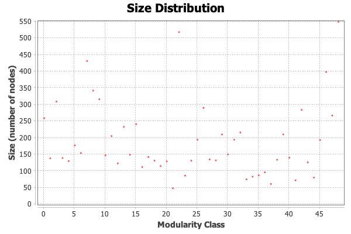

Modularity Report
Parameters:
Randomize: Off
Use edge weights: On
Resolution: 1.5
Results:
Modularity: 0.810
Modularity with resolution: 1.230
Number of Communities: 49

Algorithm:
Vincent D Blondel, Jean-Loup Guillaume, Renaud Lambiotte, Etienne Lefebvre, Fast unfolding of communities in large networks, in Journal of Statistical Mechanics: Theory and Experiment 2008 (10), P1000
Resolution:
R. Lambiotte, J.-C. Delvenne, M. Barahona Laplacian Dynamics and Multiscale Modular Structure in Networks 2009